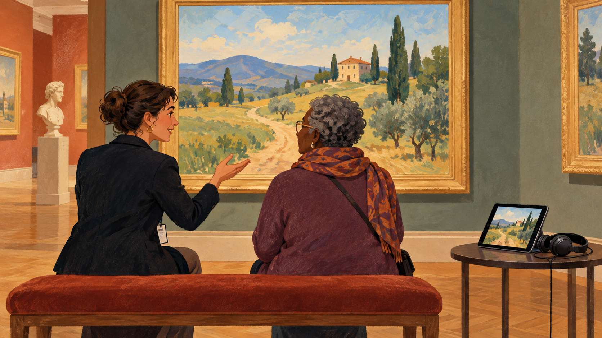
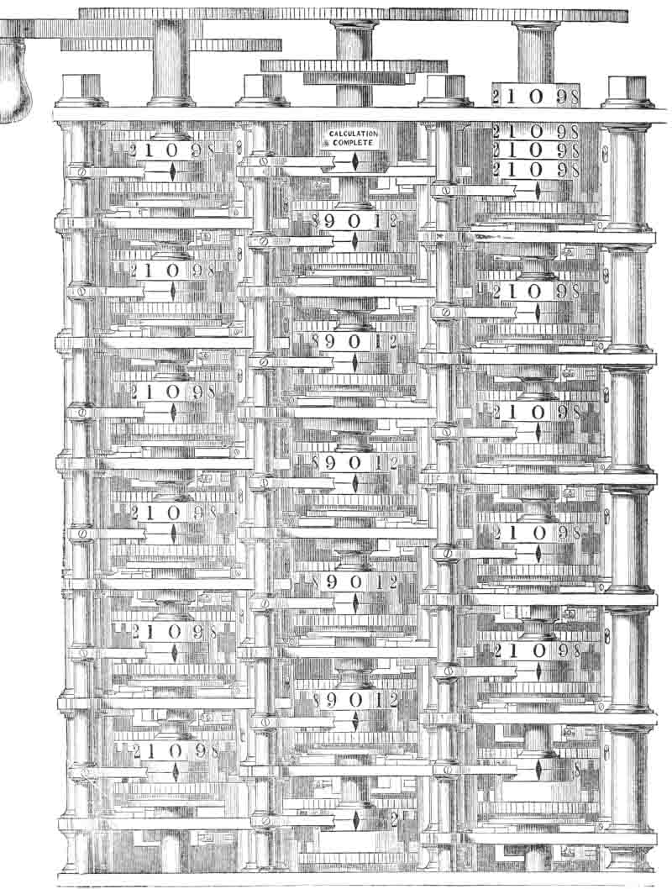

Computing / Artificial-Intelligence
AI는 옷 사진으로 무엇을 연습할까
AI의 이미지 학습을 옷장 정리처럼 들여다봅니다. 작은 흑백 사진에도 연습과 시험이 따로 있습니다.
이야기 읽기Computing · 컴퓨팅
매일 쓰는 화면과 기술에도 사연이 있습니다.
26개의 이야기
Computing / Artificial-Intelligence
AI의 이미지 학습을 옷장 정리처럼 들여다봅니다. 작은 흑백 사진에도 연습과 시험이 따로 있습니다.
이야기 읽기
Computing / Internet
사진의 목적에 따라 설명이 달라지는 이유를 통해 웹 이미지의 대체 텍스트와 접근성을 쉽게 살펴봅니다.
이야기 읽기
Computing / Computers
배비지의 1864년 회고록에서 자카드 직기의 카드와 해석기관 구상을 읽고 차분기관 실제 도판과 구별합니다.
이야기 읽기Computing / Software
로스앤젤레스의 과거 서머타임 사례로 UTC·시간대·현지 시각의 차이를 읽습니다.
이야기 읽기Computing / Internet
로그인과 언어 설정을 이어 주는 쿠키의 역할과 저장·추적의 차이를 읽습니다.
이야기 읽기Computing / Software
웹 문서의 내용과 표현 규칙을 구분하며 글자·여백·배치가 독서 경험을 바꾸는 원리를 읽습니다.
이야기 읽기Computing / Programming
도서 목록의 가상 예로 구분자·따옴표·문자열과 숫자의 차이를 이해하며 CSV의 원리를 읽습니다.
이야기 읽기Computing / Internet
도메인 이름과 서버 주소, 임시 저장을 통해 웹사이트 이름이 연결되는 원리를 읽습니다.
이야기 읽기Computing / Internet
메일 주소를 말할 때 꼭 등장하는 @. 이메일을 위해 새로 그린 기호는 아닙니다.
이야기 읽기Computing / Software
대화창의 웃는 얼굴을 따라가면 그림 대신 숫자와 이름이 나란히 적힌 목록을 만나게 됩니다.
이야기 읽기Computing / Computers
화면을 가리키는 작은 도구는 함께 일하는 컴퓨터를 보여주는 더 큰 구상의 일부였습니다.
이야기 읽기Computing / Software
2005년의 개발 배경과 원고 편집의 비유를 통해 버전 관리가 필요한 이유를 읽습니다.
이야기 읽기Computing / Internet
찾을 수 없다는 응답과 사라졌다는 응답의 차이를 읽습니다.
이야기 읽기Computing / Internet
암호화·변조 탐지·서버 확인을 나누어 보고 HTTPS가 보호하는 범위를 이해합니다.
이야기 읽기Computing / Software
사진을 줄여 보내는 압축의 원리와 선명한 글씨에 생기는 흔적을 일상의 이미지에서 살펴봅니다.
이야기 읽기Computing / Computers
커널의 역할과 실제 개발 문서를 통해 열린 협업에 필요한 검토와 책임의 구조를 살펴봅니다.
이야기 읽기Computing / Software
스캔 이미지와 텍스트의 차이에서 출발해 OCR의 쓰임과 오류·검토의 필요성을 이해합니다.
이야기 읽기Computing / Software
디지털 이미지의 투명도와 무손실 압축을 통해 파일 형식에 따라 달라지는 그림의 성질을 읽습니다.
이야기 읽기Computing / Programming
컴퓨터 언어의 이름을 따라가다 보면 영국 코미디 프로그램을 만나게 됩니다.
이야기 읽기Computing / Computers
QR 코드의 위치 표시와 데이터, 오류 정정을 통해 작은 무늬가 읽히는 원리를 살펴봅니다.
이야기 읽기Computing / Software
가상의 요리 기록 앱을 통해 표·질의·변경 확정과 로컬 데이터베이스의 역할을 읽습니다.
이야기 읽기Computing / Software
벡터 도형과 픽셀 이미지의 차이에서 SVG의 확대·구성·한계를 쉽게 이해합니다.
이야기 읽기Computing / Software
글자의 공통 번호와 저장 방식, 글꼴과 정규화의 차이를 한글 사례로 쉽게 이해합니다.
이야기 읽기Computing / Internet
팀 버너스리의 제안에서 시작해 웹과 인터넷의 차이, 링크와 열린 표준의 의미를 읽습니다.
이야기 읽기Computing / Internet
기기와 가까운 네트워크, 인터넷과 웹을 나누어 보며 와이파이 연결의 의미를 이해합니다.
이야기 읽기Computing / Software
ZIP의 파일 묶음과 무손실 압축을 나누어 보고 반복 정보를 줄여 적는 원리를 이해합니다.
이야기 읽기